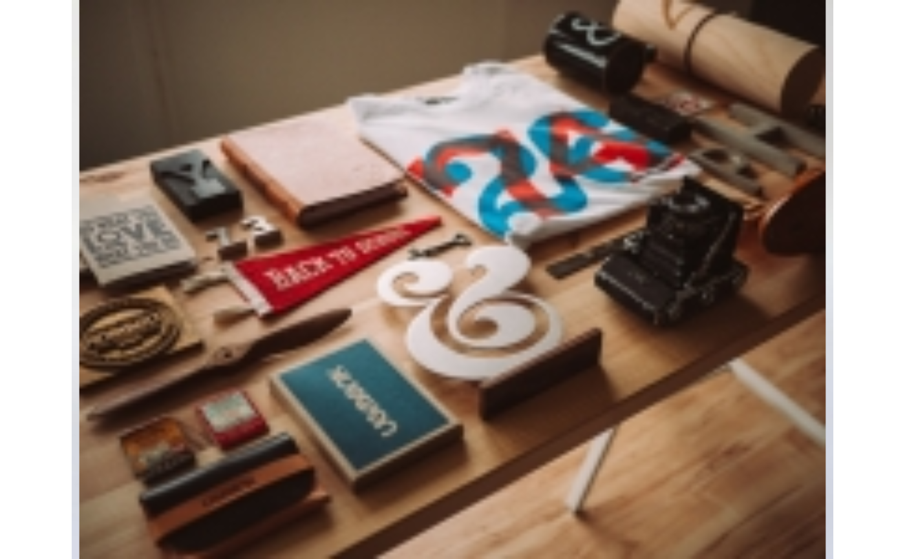

img_self_similarity returns the self-similarity of an image (i.e., the
degree to which the log-log power spectrum of the image falls with a slope of
-2). Higher values indicate higher image self-similarity.
Arguments
- img
An image in form of a matrix or array of numeric values, preferably by square size. If the input is not square, bilinear resizing to a square size is performed using the
OpenImageRpackage. Use e.g.img_read()to read an image file intoR.- full
logical. Should the full frequency range be used for interpolation? (default:
FALSE)- logplot
logical. Should the log-log power spectrum of the image be plotted? (default:
FALSE)- raw
logical. Should the raw value of the regression slope be returned? (default:
FALSE)
Details
The function takes a (square) array or matrix of numeric or integer
values representing an image as input and returns the self-similarity of
the image. Self-similarity is computed via the slope of the log-log power
spectrum using OLS. A slope near -2 indicates fractal-like
properties (see Redies et al., 2007; Simoncelli & Olshausen, 2001). Thus,
value for self-similarity that is return by the function calculated as
self-similarity = abs(slope + 2) * (-1). That is, the measure
reaches its maximum value of 0 for a slope of -2, and any deviation from -2
results in negative values that are more negative the higher the deviation
from -2. For color images, the weighted average between each color channel's
values is computed (cf. Mayer & Landwehr 2018).
Per default, only the frequency range betwen 10 and 256 cycles per image is
used for interpolation. Computation for the full range can be set via the
parameter full = TRUE.
If logplot is set to TRUE then a log-log plot of the power
spectrum is additionally shown. If the package ggplot2 is installed
the plot includes the slope of the OLS regression. Note that this option is
currently implemented for grayscale images.
It is possible to get the raw regression slope (instead of the transformed
value which indicates self-similarity) by using the option raw =
TRUE.
For color images, the weighed average between each color channel's values is computed.
References
Mayer, S. & Landwehr, J, R. (2018). Quantifying Visual Aesthetics Based on Processing Fluency Theory: Four Algorithmic Measures for Antecedents of Aesthetic Preferences. Psychology of Aesthetics, Creativity, and the Arts, 12(4), 399–431. doi:10.1037/aca0000187
Redies, C., Hasenstein, J., & Denzler, J. (2007). Fractal-like image statistics in visual art: Similarity to natural scenes. Spatial Vision, 21, 137–148. doi:10.1163/156856807782753921
Simoncelli, E. P., & Olshausen, B. A. (2001). Natural image statistics and neural representation. Annual Review of Neuroscience, 24, 1193–1216. doi:10.1146/annurev.neuro.24.1.1193
Examples
# Example image with high self-similarity: romanesco
romanesco <- img_read(system.file("example_images", "romanesco.jpg", package = "imagefluency"))
#
# display image
grid::grid.raster(romanesco)
#
# get self-similarity
img_self_similarity(romanesco)
#> [1] -0.03157856
# Example image with low self-similarity: office
office <- img_read(system.file("example_images", "office.jpg", package = "imagefluency"))
#
# display image
grid::grid.raster(office)

#
# get self-similarity
img_self_similarity(office)
#> [1] -1.217377